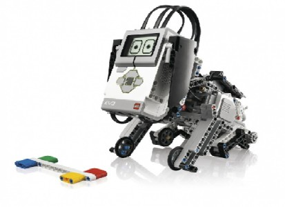

ГіроБой – це робот який сам тримає баланс, в ньому використовуються всі мотори і датчики EV3, а також додаткові кошти програмування для управління його діями.
Сортувальник кольорів - сканує, завантажує і розташує кольорові об'єкти в їх правильному місці. Сортувальник кольорів використовує датчик дотику, датчик кольору і мотори для управління своїми рухами.
Пес - чарівний робот якого можна погладити, погодувати і поспостерігати за його реакцією. Пес використовує датчик дотику і додаткові кошти програмування для управління своїми діями.
Рука робот - візьме предмети, що знаходяться в певних місцях, і розмістить їх поруч з іншими. Роботизована рука використовує датчик кольору і датчик дотику для управління своїми рухами.
Знап – це симпатичний маленький монстр, який рухається і при цьому бурчить. Знап використовує ультразвуковий датчик для того, щоб бачити об’єкти, що наближаються до нього.
Сходинковий всюдихід – це машина, яка може підніматися практично по будь яким сходам. Сходинковий всюдихід використовує гіроскопічний датчик, датчик дотику и мотори для управління своїми рухами
Слон – може ходити, підіймати хобот, брати предмети та кричати, як справжній слон. Слон використовує датчик кольору і датчик дотику для управління своїми рухами.
>